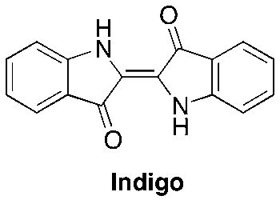

Conteúdo
A utilização de compostos orgânicos tem referência desde as civilizações mais antigas, pode-se dizer até que remonta a pré História quando os homens da caverna faziam suas pinturas rupestres.
Pesquisas arqueológicas recentes mencionam a presença de vinhos em jarros encontrados em tumbas de faraós (3150 a.C.).
A Bíblia, no episódio de Noé (Genesis), fala no vinho. Os romanos e egípcios utilizavam os corantes índigo, retirado da planta anil do campo ou timbozinho e alizarina que era retirada de raízes da Rúbia. 
O ácido cítrico ou citrato de hidrogênio, de nome oficial ácido 2-hidroxi-1,2,3-propanotricarboxílico, é um ácido orgânico fraco, que se pode encontrar nos citrinos. É usado como conservante natural (antioxidante), sendo conhecido também como acidulante INS 330, dando um sabor ácido e refrescante na preparação de alimentos e de bebidas. Em bioquímica, é importante o seu papel como intermediário do ciclo do ácido cítrico, de forma que ocorre no metabolismo de quase todos os seres vivos. É ainda usado como produto de limpeza ecológico.[1]
A química orgânica é a parte da química que estuda a estrutura e propriedades dos compostos formados à base de carbono. Os compostos de carbono são o centro de vida neste planeta. Os compostos de carbono incluem os ácidos desoxirribonucléicos (DNAs), as moléculas helicoidais gigantes que contêm toda nossa informação genética. Elas incluem as proteínas que catalisam todas as reações em nosso corpo, e isso constitui os compostos essenciais de nosso sangue, músculos e pele. Junto como o oxigênio do ar que se respira, os compostos de carbono fornecem a energia que sustenta a vida.